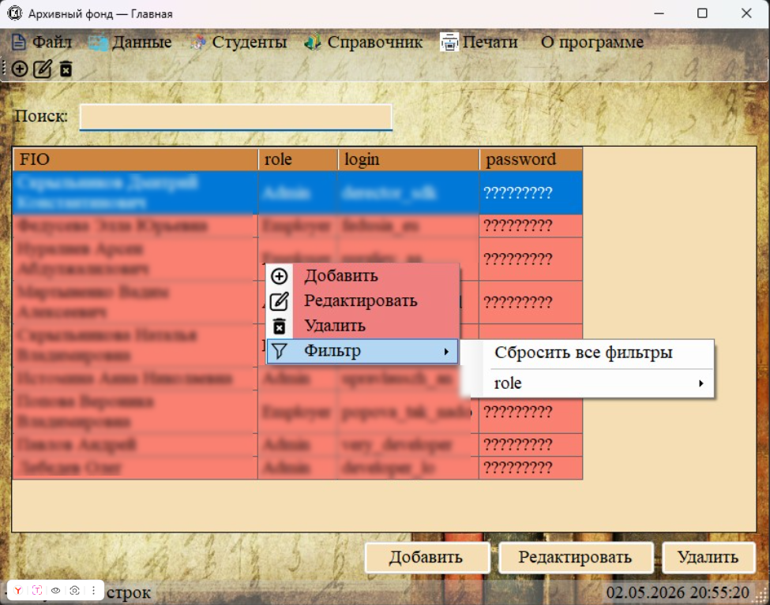
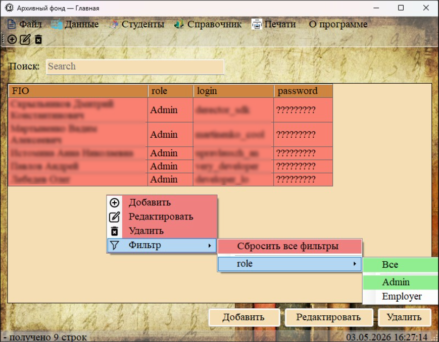
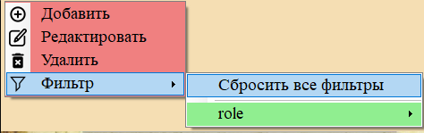

Для более точного отбора записей, чем простой поиск, используется фильтрация по значениям столбцов. Фильтр вызывается из контекстного меню (правый клик мыши по таблице) через пункт «Фильтр».

Рис. 1. Правый клик по таблице -> пункт «Фильтр»
Структура меню фильтрации

Рис. 2. Меню фильтрации со списком столбцов и доступными значениями
Меню фильтрации имеет следующую структуру:
— «Сбросить все фильтры» — полностью отключает все активные фильтры (подсвечивается красным, если есть активные фильтры).
— Разделитель — отделяет служебные пункты от списка столбцов.
— Список столбцов — каждый столбец таблицы представлен отдельным подменю. Если столбец имеет активный фильтр, его название подсвечивается зелёным.
Фильтрация по конкретному столбцу
В подменю каждого столбца доступны:
— «Все» — отключает фильтр по данному столбцу (подсвечивается зелёным, если фильтр был активен).
— Разделитель.
— Список уникальных значений — все значения, которые встречаются в данном столбце (отсортированы, пустые значения отображаются как «(пусто)»).
Как установить фильтр

Рис. 3. Выбор конкретной роли для фильтрации
1. Наведите курсор на название нужного столбца в меню «Фильтр».
2. В открывшемся подменю выберите конкретное значение, по которому хотите отфильтровать.
3. Таблица моментально перестроится, отображая только строки, где значение в выбранном столбце совпадает с указанным.
4. Выбранный пункт в меню подсветится зелёным, а название столбца также станет зелёным — это индикаторы активного фильтра.
Особенности работы фильтров
— Множественные фильтры — можно установить фильтры одновременно по нескольким столбцам. Будут показаны строки, удовлетворяющие всем условиям (логическое «И»).
— Совместимость с поиском — если в строке поиска уже есть текст, фильтрация будет применяться к уже отфильтрованному поиском результату.
— Сброс всех фильтров — выберите пункт «Сбросить все фильтры» в корне меню «Фильтр». После этого зелёная подсветка пропадёт, и таблица покажет все записи раздела.
— Сброс фильтра по одному столбцу — откройте подменю нужного столбца и выберите пункт «Все».

Рис. 4. Пункт «Сбросить все фильтры» для быстрой очистки
Когда фильтрация недоступна
Пункт меню «Фильтр» становится неактивным (серым) в следующих случаях:
— Когда не выбран ни один раздел (таблица пуста).
— Если в текущей таблице все значения в столбцах уникальны или их слишком мало для осмысленной фильтрации (например, столбец с идентификаторами).